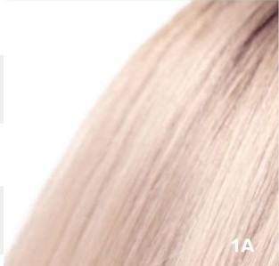
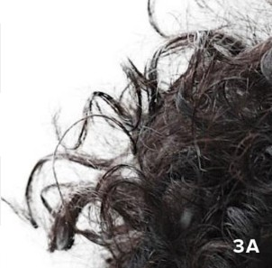
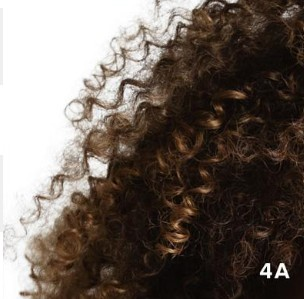
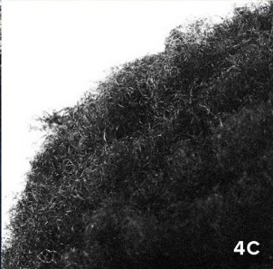
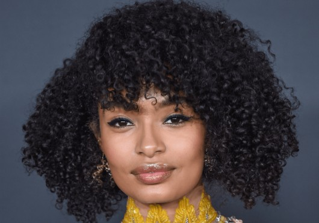
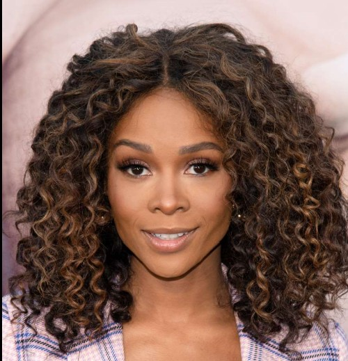
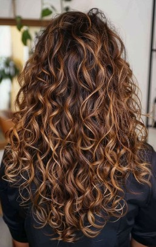

Overview & Goal
Firstly, thank you for helping us with our project! You will be helping us build a training dataset for an AI model that will be able to accuratley identify and generate historically underrepresented hair types. Our priority is to label what is visible in each image. If you are unsure, please choose Unsure/Not Visible rather than guessing. Consistency beats precision!
- Classify hair characteristics (curl radius, twist frequency, curl wavelength, porosity, thickness).
- Mark image conditions (lighting, occlusion, blur) that affect visibility.
- Base labels on the current photo only. Don't infer by asking other people or online resources.
- Use Unsure/Not Visible when the view is obstructed or out of frame.
Label Taxonomy (what to capture)
These are the fields you will see in the labeling form. For each, pick one value unless marked multi‑select. When in doubt, open the accordion for visual cues and notes.
Curl Radius (in cm)




Twist Frequency (in units)



Curl Wavelength (in mm)
Porosity (low, medium, or high)
Thickness of a single strand (low, medium, or high)
Labeling Protocol (step‑by‑step)
- Scan the image for lighting, occlusion, and whether enough hair is visible for you to make a well-informed decision about the hair.
- Choose curl radius, twist frequency, curl wavelength using your best judgement, making estimates consistent with the scale of the person's face.
- Choose porosity and thickness (of each individual strand, not of the hair as a whole). You may need to use context clues to determine porosity (i.e. how frizzy the hair looks).
- Flag image conditions (lighting/blur/occlusion/face status).
- Final check: If you guessed on any field, switch to Unsure. Consistency wins.
Quality Rules & Edge Cases
- Clear view of hair with acceptable lighting.
- Protective styles (braids, twists, locs) — label the style and set pattern to Unsure if natural pattern is hidden.
- Images with explicit content, watermarks, or personal identifiers that violate consent.
- Children without clear guardian consent documentation (if present in your queue).
- Severely blurred/obscured hair where core attributes are not visible.
Common tricky cases (open for guidance)
| Case | How to label |
|---|---|
| Blowouts/Flat‑ironed curls | Pattern = what you see (often 1 or 2); Style = Blowout/Straightened. |
| Wet hair | Pattern may look looser; label the visible state; flag Image Conditions: Good/Low light accordingly. |
| Mixed patterns | Select Mixed; add style notes if helpful. |
| Partial frame (top only) | Length = Unsure; label other visible attributes. |
| Headwear/hats | Flag heavy occlusion; label what is visible; use Unsure when necessary. |
| Color corrections/filter | If color is obviously altered by a filter, mark Image Conditions and pick closest base color. |
- Accuracy: Labels match visible evidence; no guessing.
- Completeness: All applicable fields filled; Unsure used appropriately.
- Consistency: Same judgement applied across similar images.
Quick Text Examples (what we expect)
| Image description | Expected labels |
|---|---|
| Shoulder‑length hair with clear S‑waves; brown with sun‑lights. | Pattern: 2B · Length: Medium · Density: Medium · Thickness: Medium · Color: Medium Brown, Highlights · Style: Loose · Conditions: Good lighting |
| Tight coils in a bun; edges laid; color black; face partially visible. | Pattern: 4A · Length: Unsure · Density: High · Thickness: Coarse · Color: Black · Style: Bun/Updo · Conditions: Face visible |
| Box braids mid‑back; blonde ombre tips; indoor low light. | Pattern: Unsure · Length: Long · Density: Unsure · Thickness: Unsure · Color: Dark Brown, Blonde, Two‑tone/Ombre · Style: Braids (box) · Conditions: Low light, Heavy occlusion |
| Platinum pixie cut; straight; sharp focus. | Pattern: 1 · Length: Short · Density: Medium · Thickness: Fine · Color: Bleached/Platinum · Style: Loose · Conditions: Good lighting |
Privacy, Safety & Consent
If an image appears to be used without consent or includes sensitive personal data, stop and flag it immediately. Our dataset requires that images are permissibly collected and used. Faces should be blurred when possible; if a face is clearly identifiable and cannot be blurred in the labeling tool, mark Face visible and escalate.
- Never download or share images outside the labeling tool.
- Do not try to identify the person; label hair only.
- If you suspect a child’s image lacks consent, do not label and flag.
You’re ready 🎉
Thank you for helping us build a fair, inclusive dataset across all hair types and styles.
Go to Labeling ToolNeed help? Email ops@yourdomain.com. Include the image ID in your message.